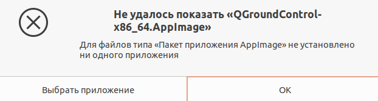
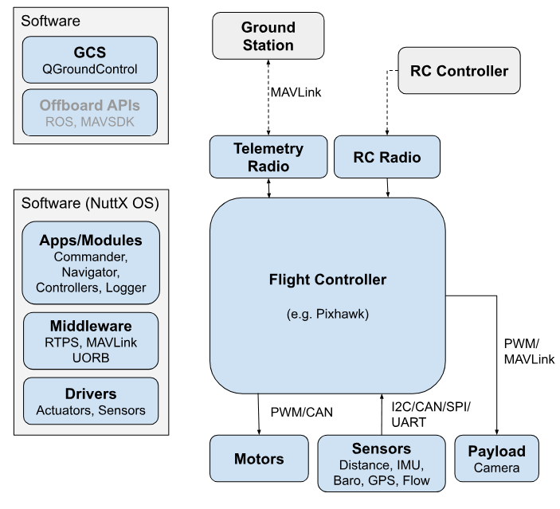
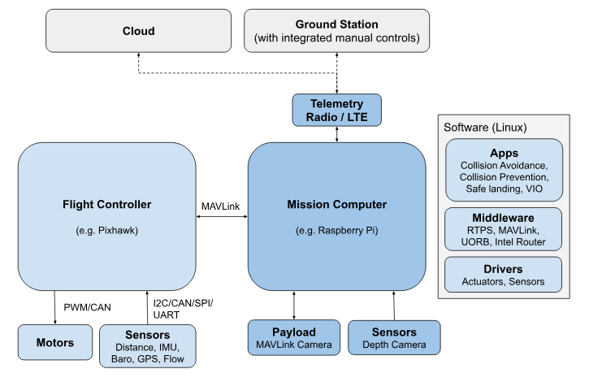
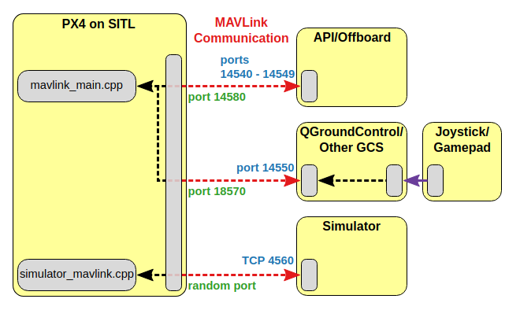
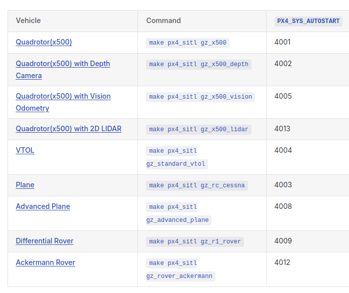

MAVLink — (Micro Air Vehicle Link)
Протокол обмена сообщениями между наземной станцией (Ground Control Station, а также её компонентами) и малыми беспилотными аппаратами (как летающими, так и ездящими, плавающими и т.д.) по радиоканалам. Обычно именно этот протокол используется для телеметрии.
Mavros
Библиотека-связующее звено между аппаратом, работающем по протоколу MAVLink, и ROS. Описание - http://wiki.ros.org/mavros
Dronekit — пакет программ для разработки приложений для бортового компьютера. Проект распространяется по модели СПО. Основной сайт - dronekit.io.
OpenCV — (Open Source Computer Vision Library) – набор бибилиотек компьютер
Полетный контроллер / автопилот

Прошивка - программное обеспечение, управляющее работой какого-либо устройства, например, полетного контроллера или регулятора мотора (ESC).
Бортовой компьютер — дополнительный вычислительный модуль для управления полётом БПЛА (управление полётным контроллером, ориентация в пространстве по изображению с камеры, управление автономным полётом). В УМК ЖУЖА в качестве бортового компьютера используется Raspberry PI.
Квадрокоптер - Беспилотный летательный аппарат с 4-мя винтами и электронной системой стабилизации.
Мультикоптер - Беспилотный летательный аппарат с электронной системой стабилизации и числом винтов, равным 3 (трикоптер), 4 (квадрокоптер), 6 (гексакоптер), 8 (октокоптер) или более.
Мотор - Электродвигатель, который вращает винты мультикоптера. Обычно используются бесколлекторные электродвигатели. Такие двигатели подключаются к ESC.
ESC / регулятор двигателя / "регуль" - Electronic Speed Controller. Специализированная плата, которая управляет скоростью вращения бесколлекторного электродвигателя. Управляется полетным контроллером при помощи широтно-импульсной модуляции (ШИМ).
ESC имеет прошивку, которая определяет особенности его работы.

АКБ / аккумулятор / батарея - Перезаряжаемый источник тока для БПЛА. В квадрокоптерах обычно применяются Li-po (литий-полимерные) аккумуляторы.
Ячейка / "банка" АКБ - Составная часть АКБ, непосредственный источник тока. Обычно АКБ для БПЛА состоят из нескольких (2–6) ячеек, соединенных последовательно. Максимальное напряжение одной Li-po ячейки – 4.2 В; общее напряжение АКБ равно суммарному напряжению ячеек. Количество ячеек обозначается буквой S, например: 2S, 3S, 4S. В Клевере обычно применяются аккумуляторы 3S.
Пульт / аппаратура радиоуправления / "аппа" - Пульт для управления квадрокоптером, работающий по радиоканалу. Для работы пульта к полетном контроллеру необходимо подключить ресивер. Клевером, также, можно управлять со смартфона.
Телеметрия
Арминг
Armed – состояние коптера готовности к полету. При поднятии стика газа либо при посылке внешней команды с целевой точкой – коптер полетит. Обычно коптер начинает вращать винтами при переходе в состояние "armed" даже если стик газа находится внизу. Противоположным состоянием является Disarmed
PX4
Популярный полетный контроллер с открытым исходным кодом, работающий на платах Pixhawk, Pixracer и других. PX4 рекомендуется для использования на Клевере.
Raspberry Pi
Популярный одноплатный микрокомпьютер, использующийся в конструкторе Клевер.
Образ SD-карты
Полная копия содержимого SD-карты, представленная в виде файла. Такой файл можно загрузить на SD-карту, воспользовавшись специальной утилитой, например Etcher. SD-карта, вставленная в Raspberry Pi является единственным его долговременным хранилищем и полностью определяет, что он будет делать. Конструктор Клевер включает в себя рекомендованный образ для SD-карты.
APM / ArduPilot
Полетный контроллер с открытым исходным кодом, изначально созданный для платы Arduino. Впоследствии был портирован на Pixhawk, Pixracer и другие платы.
UART
Последовательный асинхронный интерфейс передачи данных, применяемый во многих устройствах. Например, GPS антенны, Wi-Fi роутеры или Pixhawk.
IMU
Inertial measurement unit. Комбинация датчиков (гироскоп, акселерометр, магнитометр), которая помогает БПЛА рассчитывать ориентацию и положение в пространстве.
Estimation
Процесс определения ПО полетного контроллера состояния квадрокоптера: положения в пространстве, скоростей, углов наклона и т. д. Для этого используется смешивание данных с установленных датчиков и различные алгоритмы фильтрации, например фильтр Калмана.
В прошивке PX4 есть два модуля для estimation'а: LPE и ECL EKF (EKF2).
В прошивке APM эту функцию выполняет подсистема EKF2.
Пульт управления

Типы дронов:
Ground Control Stations (Наземные станции управления GCS) - это наземные системы, которые позволяют операторам UV контролировать беспилотный летательный аппарат и его полезную нагрузку. Ниже перечислены некоторые продукты, которые, как известно, работают с PX4.
Среда включает в себя:
Установка набора инструментов:
git clone https://github.com/PX4/PX4-Autopilot.git --recursive
bash ./PX4-Autopilot/Tools/setup/ubuntu.sh
Можете использовать опции --no-nuttx и --no-sim-tools, чтобы не использовать NuttX и/или инструменты моделирования.
Как только вы закончите настройку набора инструментов командной строки:
Программное обеспечение Dronecode GCS называется QGroundControl ("QGC"). Оно работает на оборудовании Windows, Android, macOS или Linux и поддерживает широкий спектр форм-факторов экрана. Вы можете скачать его (бесплатно) здесь.
QGroundControl взаимодействует с дроном с помощью телеметрической радиостанции (двунаправленный канал передачи данных), которая позволяет получать информацию о полете и безопасности в режиме реального времени, а также управлять транспортным средством, камерой и другими полезными устройствами с помощью интерфейса "наведи и щелкни". На оборудовании, которое их поддерживает, вы также можете управлять транспортным средством вручную с помощью джойстиков. QGC также можно использовать для визуального планирования, выполнения и мониторинга автономных миссий, установки геозон и многого другого.
Настольные версии QGroundControl также используются для установки (прошивки) встроенного ПО PX4 и настройки PX4 на аппаратном обеспечении автопилота/контроллера полета дрона.
Ubuntu поставляется с менеджером последовательного модема, который препятствует любому использованию последовательного порта (или USB serial), связанному с робототехникой. Перед установкой QGroundControl вам следует удалить диспетчер модемов и предоставить себе разрешения на доступ к последовательному порту. Вам также необходимо установить GStreamer для поддержки потоковой передачи видео.
Перед первой установкой QGroundControl:
В командной строке введите:
sudo usermod -a -G dialout $USER sudo apt-get remove modemmanager -y sudo apt install gstreamer1.0-plugins-bad gstreamer1.0-libav gstreamer1.0-gl -y sudo apt install libfuse2 -y sudo apt install libxcb-xinerama0 libxkbcommon-x11-0 libxcb-cursor-dev -yВыйдите из системы и войдите снова, чтобы разрешить изменение прав пользователя.
Как установить QGroundControl:
chmod +x ./QGroundControl.AppImage ./QGroundControl.AppImage(или двойной клик)
Его следует использовать вместо стабильной версии при работе с новым кодом, разветвленным из основной ветки main PX4.
Ссылка на закачку QGroundControl Daily Build для linux
Скачал файл в Загрузку, а что дальше делать, не сказано.

Вам необходимо создать PX4, чтобы использовать симуляторы, или если вы хотите модифицировать PX4 и создать пользовательскую сборку. Если вы просто хотите опробовать PX4 на реальном оборудовании, то загрузите готовые двоичные файлы с помощью QGroundControl (нет необходимости следовать этим инструкциям).
Прежде чем следовать этим инструкциям, вы должны сначала установить набор инструментов разработчика для вашей основной операционной системы и целевого оборудования (IDE и QGC).
git clone https://github.com/PX4/PX4-Autopilot.git --recursive
Возможно уже скачали репозиторий, когда устанавливали Developer Toolchain.
Перейдите в каталог PX4-Autopilot. В зависимости от вашей операционной системы у вас будет установлена либо Gazebo SITL, либо Gazebo Classic SITL (если вы не знаете, какая из них лучше, вы можете попробовать обе).
Запустите Gazebo SITL, используя следующую команду:
make px4_sitl gz_x500
После этого откроется консоль PX4.
Возможно, вам потребуется запустить QGroundControl, прежде чем продолжить, поскольку конфигурация PX4 по умолчанию требует подключения к наземному управлению перед взлетом. Загрузка и установка здесь (Загрузка и установка).
Дроном можно управлять, набрав следующую команду (как показано в консоли выше).:
pxh> commander takeoff
Дрон взлетит, и вы увидите это в пользовательском интерфейсе симулятора.
Беспилотник можно посадить, набрав команду commander land, а всю имитацию можно остановить, нажав CTRL+C (или введя команду shutdown).
Управление симулятором с помощью наземной станции управления приближено к реальному управлению транспортным средством. Нажмите на местоположение на карте во время полета транспортного средства (режим взлета) и включите ползунок. Это изменит положение транспортного средства.
Например, для сборки для аппаратного обеспечения Pixhawk 4 можно использовать следующую команду:
cd PX4-Autopilot make px4_fmu-v5_defaultУспешный запуск завершится с результатом, аналогичным следующему:
-- Build files have been written to: /home/youruser/src/PX4-Autopilot/build/px4_fmu-v4_default [954/954] Creating /home/youruser/src/PX4-Autopilot/build/px4_fmu-v4_default/px4_fmu-v4_default.px4Первая часть параметра build target px4_fmu-v4 указывает на аппаратное обеспечение целевого контроллера полета для встроенного ПО. Суффикс, в данном случае _default, указывает на конфигурацию встроенного ПО, например, на поддержку или отсутствие определенных функций.
Вы должны использовать поддерживаемую версию GCC для сборки этой платы (например, ту же, что используется CI/docker) или удалить модули из сборки. Сборка с использованием неподдерживаемого GCC может завершиться неудачей, так как PX4 близок к пределу флэш-памяти платы в 1 МБ.
Полный синтаксис для вызова make с определенным файлом конфигурации и инициализации приведен ниже.:
make [VENDOR_][MODEL][_VARIANT] [VIEWER_MODEL_DEBUGGER_WORLD]VENDOR_MODEL_VARIANT: (также известный как CONFIGURATION_TARGET)
make list_config_targets
VIEWER_MODEL_DEBUGGER_WORLD:Вы можете получить список всех доступных параметров VIEWER_MODEL_DEBUGGER_WORLD, используя приведенную ниже команду:
make px4_sitl list_vmd_make_targets
Дополнителеная информация:
Параметры VENDOR_MODEL_VARIANT сопоставляются с конкретными файлами конфигурации px4board в дереве исходных текстов PX4 в каталоге /boards. В частности, VENDOR_MODEL_VARIANT сопоставляется с файлом конфигурации boards/VENDOR/MODEL/VARIANT.px4board (например, px4_fmu-v5_default соответствует boards/px4/fmu-v5/default.px4board).

Аппаратное обеспечение состоит из:
Компьютер наземной станции обычно запускает QGroundControl (или какое-либо другое программное обеспечение наземной станции). На нем также может работать программное обеспечение для робототехники, такое как MAVSDK или ROS.
PX4 flight stack (пакет управления полетом PX4), работающий на контроллере полета, включает драйверы, модули связи, контроллеры, оценщики и другое промежуточное программное обеспечение и системные модули.

Контроллер полета управляет обычным полетным стеком PX4, в то время как компьютер-компаньон предоставляет расширенные функции, использующие компьютерное зрение. Обе системы подключены по быстрому последовательному каналу или IP-каналу и, как правило, взаимодействуют по протоколу MAVLink. Связь с наземными станциями и облаком обычно осуществляется через сопутствующий компьютер (например, с помощью маршрутизатора MAVLink (от Intel)).
Системы PX4 обычно работают под управлением операционной системы Linux на сопутствующем компьютере. Linux - гораздо лучшая платформа для разработки "общего" программного обеспечения, чем NuttX; разработчиков Linux гораздо больше, и уже написано много полезного программного обеспечения (например, для компьютерного зрения, коммуникаций, облачной интеграции, драйверов оборудования). Компьютеры-компаньоны иногда работают под управлением Android по той же причине.
Flight stack - это набор алгоритмов наведения, навигации и управления автономными беспилотными летательными аппаратами. Он включает в себя контроллеры для самолетов с неподвижным крылом, мультироторных и СВВП, а также средства оценки ориентации и положения.
middleware (промежуточное программное обеспечение) состоит в основном из драйверов устройств для встроенных датчиков, средств связи с внешним миром (сопутствующий компьютер, GCS и т.д.) и шины сообщений uORB для публикации и подписки.
Кроме того, промежуточное программное обеспечение включает в себя уровень моделирования, который позволяет запускать пилотажный код PX4 в настольной операционной системе и управлять смоделированным на компьютере транспортным средством в имитируемом "мире".
NuttX - это основная RTOS для запуска PX4 на пульте управления полетом. Она с открытым исходным кодом (лицензия BSD), легкая, эффективная и очень стабильная.
Модули выполняются как задачи: у них есть свои собственные списки файловых дескрипторов, но они используют одно адресное пространство. Задача все равно может запускать один или несколько потоков, которые используют общий список файловых дескрипторов.
Каждая задача / поток имеет стек фиксированного размера, и существует периодическая задача, которая проверяет, осталось ли во всех стеках достаточно свободного места (в зависимости от цвета стека).
Моделирование - это быстрый, простой и, самое главное, безопасный способ протестировать изменения в коде PX4 перед началом полетов в реальных условиях. Это также хороший способ начать летать с PX4, если у вас еще нет машины для экспериментов.
PX4 поддерживает как программную симуляцию в цикле (SITL), при которой стек управления полетом выполняется на компьютере (либо на том же компьютере, либо на другом компьютере в той же сети), так и аппаратную симуляцию в цикле (HITL) с использованием встроенного программного обеспечения для моделирования на реальной плате контроллера полета.
В сборке SITL для PX4 для обработки этих сообщений используется SimulatorMavlink.cpp, в то время как в аппаратной сборке в режиме HIL используется mavlink_receiver.cpp. Данные датчиков из симулятора записываются в разделы PX4 uORB. Все двигатели / исполнительные механизмы заблокированы, но внутреннее программное обеспечение полностью работоспособно.
PX4 напрямую использует Gazebo API для взаимодействия с Gazebo, и MAVLink не требуется.

Если вы используете обычную систему сборки SITL make configuration targets (см. следующий раздел), то и SITL, и симулятор будут запущены на одном компьютере, и указанные выше порты будут автоматически настроены. Вы можете настроить дополнительные UDP-соединения MAVLink и иным образом изменить среду моделирования в файлах конфигурации сборки и инициализации.
make px4_sitl simulator[_vehicle-model]
где simulator - это gz (для Gazebo), gazebo-classic, jmavsim или какой-либо другой симулятор, а модель транспортного средства - это конкретный тип транспортного средства, поддерживаемый этим симулятором (на момент написания статьи Gazebo и jMAVSim поддерживают только мультикоптеры, в то время как Gazebo Classic поддерживает множество различных типов).
Ниже приведен ряд примеров, и их гораздо больше на отдельных страницах для каждого из симуляторов:
# Start Gazebo with the x500 multicopter make px4_sitl gz_x500 # Start Gazebo Classic with plane make px4_sitl gazebo-classic_plane # Start Gazebo Classic with iris and optical flow make px4_sitl gazebo-classic_iris_opt_flow # Start JMavSim with iris (default vehicle model) make px4_sitl jmavsim # Start PX4 with no simulator (i.e. to use your own "custom" simulator) make px4_sitl none_iris
Моделирование может быть дополнительно настроено с помощью переменных среды:
PX4_ESTIMATOR: Эта переменная определяет, какой оценщик использовать. Возможные варианты: ekf2 (по умолчанию), lpe (не рекомендуется). Его можно задать с помощью export PX4_ESTIMATOR=lpe перед запуском моделирования.
Описанный здесь синтаксис упрощен, и есть много других параметров, которые вы можете настроить с помощью make - например, указать, что вы хотите подключиться к IDE или отладчику. Дополнительные сведения см. в разделе: Создание кода > PX4 Make Build Targets.
Коэффициент скорости устанавливается с помощью переменной среды PX4_SIM_SPEED_FACTOR. Например, чтобы запустить симуляцию jMAVSim со скоростью, в 2 раза превышающей скорость реального времени:
PX4_SIM_SPEED_FACTOR=2 make px4_sitl jmavsim
Для запуска в два раза меньшей скорости реального времени:
PX4_SIM_SPEED_FACTOR=0.5 make px4_sitl jmavsim
Вы можете применить этот коэффициент ко всем запускам SITL в текущем сеансе, используя EXPORT:
export PX4_SIM_SPEED_FACTOR=2 make px4_sitl jmavsim
Последовательность шагов для lockstep такова:
Аналогичным образом вы можете использовать VPN для создания туннеля к внешнему интерфейсу (в той же или другой сети).
Один из способов создания туннеля - использовать параметры SSH-туннелирования. Сам туннель можно создать, выполнив следующую команду на localhost, где remote.local - это имя удаленного компьютера:
ssh -C -fR 14551:localhost:14551 remote.local
UDP-пакеты необходимо преобразовать в TCP-пакеты, чтобы их можно было передавать по SSH. Утилиту netcat можно использовать на обеих сторонах туннеля - сначала для преобразования пакетов из UDP в TCP, а затем обратно в UDP на другом конце.
QGC должен быть запущен перед запуском netcat.
На компьютере QGroundControl преобразование пакетов UDP может быть реализовано путем выполнения следующих команд:
mkfifo /tmp/tcp2udp netcat -lvp 14551 < /tmp/tcp2udp | netcat -u localhost 14550 > /tmp/tcp2udp
На стороне симулятора SSH-туннеля команда выглядит следующим образом:
mkfifo /tmp/udp2tcp netcat -lvup 14550 < /tmp/udp2tcp | netcat localhost 14551 > /tmp/udp2tcp
Номер порта 14550 действителен для подключения к QGroundControl или другому GCS, но его следует настроить для других конечных точек (например, API разработчика и т.д.).
Теоретически туннель может работать бесконечно, но в случае возникновения проблемы может потребоваться перезапуск подключений netcat.
На компьютере QGC можно запустить скрипт QGC_remote_connect.bash для автоматической настройки/выполнения приведенных выше инструкций. Моделирование уже должно быть запущено на удаленном сервере, и у вас должна быть возможность подключиться к этому серверу по SSH.
Gazebo - это симулятор робототехники с открытым исходным кодом. Он заменяет старый классический симулятор Gazebo и является единственной поддерживаемой версией Gazebo для Ubuntu 22.04 и более поздних версий.
Поддерживаемые транспортные средства: Квадротор, самолет, СВВП, ровер
Если вы хотите использовать Gazebo в Ubuntu 20.04, вы можете установить его вручную, предварительно выполнив обычный процесс установки (установка gz-garden приведет к удалению Gazebo-Classic!).:
sudo wget https://packages.osrfoundation.org/gazebo.gpg -O /usr/share/keyrings/pkgs-osrf-archive-keyring.gpg echo "deb [arch=$(dpkg --print-architecture) signed-by=/usr/share/keyrings/pkgs-osrf-archive-keyring.gpg] http://packages.osrfoundation.org/gazebo/ubuntu-stable $(lsb_release -cs) main" | sudo tee /etc/apt/sources.list.d/gazebo-stable.list > /dev/null sudo apt-get update sudo apt-get install gz-garden
cd /path/to/PX4-Autopilot make px4_sitl gz_x500При этом запускаются как экземпляр PX4 SITL, так и клиент Gazebo.
Ниже перечислены поддерживаемые средства и команды make. Обратите внимание, что все целевые объекты gazebo make имеют префикс gz_.

Все модели транспортных средств (и миры) включены в качестве подмодуля из репозитория Gazebo Models Repository.
Приведенные выше команды запускают одно транспортное средство с полным пользовательским интерфейсом. QGroundControl должен иметь возможность автоматического подключения к моделируемому транспортному средству.
Вы запускаете PX4 в автономном режиме, добавив к команде make префикс PX4_GZ_STANDALONE=1:
cd /path/to/PX4-Autopilot PX4_GZ_STANDALONE=1 make px4_sitl gz_x500Затем PX4 SITL будет ждать, пока не обнаружит экземпляр gz-сервера, а затем подключится к нему.
WARN [gz bridge] Service call timed out as Gazebo has not been detectedСамый простой способ запустить симуляцию - использовать скрипт Python simulation-gazebo, который можно найти в репозитории Gazebo Models Repository. Его можно использовать для запуска экземпляра gz-сервера с любым поддерживаемым миром и транспортным средством.
Скрипт можно использовать без установки каких-либо дополнительных зависимостей, и он будет извлекать поддерживаемые модели и миры PX4 при первом использовании (по умолчанию) и сохранять их в ~/.simulation-gazebo. При повторном вызове скрипт будет использовать этот каталог для получения моделей и миров. Поэтому, если вы хотите использовать свою собственную модель и запускать ее в автономном режиме, вам нужно будет поместить ее исходный код в ~/.simulation-gazebo.
Вы можете скачать скрипт локально, используя любой метод, который вам нравится, например, wget:
wget https://raw.githubusercontent.com/PX4/PX4-gazebo-models/main/simulation-gazeboСкрипт можно запустить с помощью:
cd /path/to/script/ python3 simulation-gazeboДополнительные сведения и аргументы приведены в разделе Gazebo models.
Если команда make px4_sitl gz_x500 выдает ошибку: ninja: error: unknown target 'gz_x500', запустите команду make distclean, чтобы начать с чистого листа, и попробуйте снова запустить команду make px4_sitl gz_x500